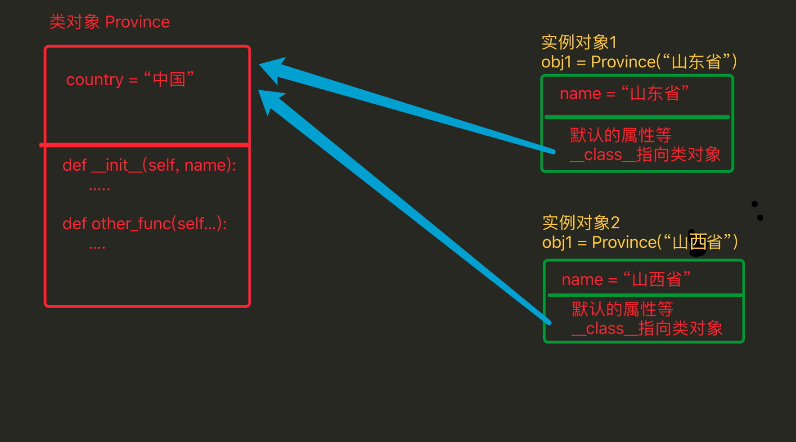
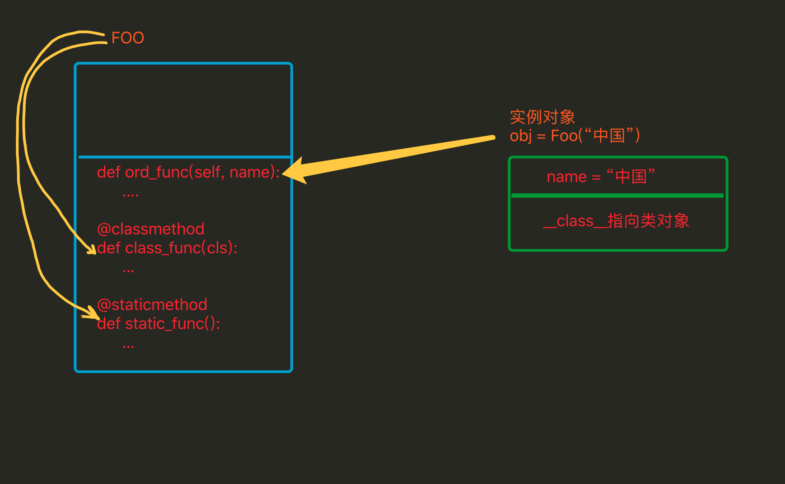

再论静态方法和类方法
1. 类属性、实例属性
它们在定义和使用中有所区别，而最本质的区别是内存中保存的位置不同，
- 实例属性属于对象
- 类属性属于类
class Province(object):
# 类属性
country = '中国'
def __init__(self, name):
# 实例属性
self.name = name
# 创建一个实例对象
obj = Province('山东省')
# 直接访问实例属性
print(obj.name)
# 直接访问类属性
Province.country
由上述代码可以看出【实例属性需要通过对象来访问】【类属性通过类访问】，在使用上可以看出实例属性和类属性的归属是不同的。
其在内容的存储方式类似如下图：

由上图看出：
- 类属性在内存中只保存一份
- 实例属性在每个对象中都要保存一份
应用场景：
- 通过类创建实例对象时，如果每个对象需要具有相同名字的属性，那么就使用类属性，用一份既可
2. 实例方法、静态方法和类方法
方法包括：实例方法、静态方法和类方法，三种方法在内存中都归属于类，区别在于调用方式不同。
- 实例方法：由对象调用；至少一个self参数；执行实例方法时，自动将调用该方法的对象赋值给self；
- 类方法：由类调用； 至少一个cls参数；执行类方法时，自动将调用该方法的类赋值给cls；
- 静态方法：由类调用；无默认参数；
class Foo(object):
def __init__(self, name):
self.name = name
def ord_func(self):
""" 定义实例方法，至少有一个self参数 """
# print(self.name)
print('实例方法')
@classmethod
def class_func(cls):
""" 定义类方法，至少有一个cls参数 """
print('类方法')
@staticmethod
def static_func():
""" 定义静态方法 ，无默认参数"""
print('静态方法')
f = Foo("中国")
# 调用实例方法
f.ord_func()
# 调用类方法
Foo.class_func()
# 调用静态方法
Foo.static_func()

对比
- 相同点：对于所有的方法而言，均属于类，所以 在内存中也只保存一份
- 不同点：方法调用者不同、调用方法时自动传入的参数不同。